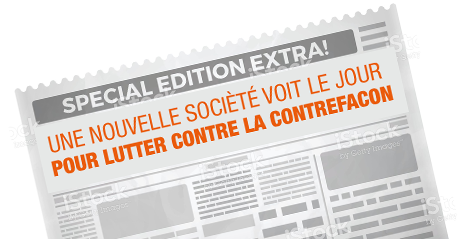
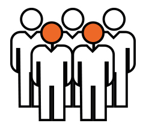
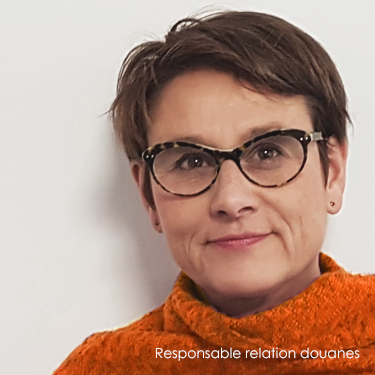
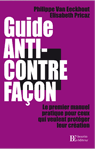

Nos valeurs,
notre engagement
L’histoire de
Contratak
Contratak
Voilà 11 ans, plus exactement en février 2006,
la société Contratak voyait le jour.
Son fondateur, Philippe Van Eeckhout,en
partenariat avec le cabinet Plasseraud, se
proposait alors d’offrir aux entreprises un service
encore inédit et entièrement dédié à la lutte
contre la contrefaçon.
la société Contratak voyait le jour.
Son fondateur, Philippe Van Eeckhout,en
partenariat avec le cabinet Plasseraud, se
proposait alors d’offrir aux entreprises un service
encore inédit et entièrement dédié à la lutte
contre la contrefaçon.
Aujourd’hui, plus de cent cinquante
entreprises nous font confiance et nous les
accompagnons dans leurs actions aux
quatre coins du globe.
entreprises nous font confiance et nous les
accompagnons dans leurs actions aux
quatre coins du globe.

L’objectif principal est et a toujours été de proposer aux entreprises, quels que soient leur secteur d’activité, leur taille, leur connaissance du sujet et de la zone géographique
concernée, la meilleure stratégie possible pour endiguer efficacement la contrefaçon.
Le service que nous proposons permet aux PME
de gagner du temps, de l’argent et d’arriver à un
résultat à court terme en évitant la multiplication
des intermédiaires. Pour les grandes entreprises
c’est pouvoir désengorger leur service juridique en
sous-traitant une partie des activités lutte
anti-contrefaçon.
Notre engagement :
Etre à vos côtés pour lutter
efficacement contre la contrefaçon
Vous faire gagner du temps et de l’argent
Vous donner des réponses rapides et
efficaces
Savoir-faire & Performance

Les fondateurs
Philippe Van Eeckhout est le fondateur
de la société ContrAtak S.A.S, spécialisée dans la lutte
contre les contrefaçons. Diplômé en droit de la
propriété industrielle, il possède une expérience de plus
de 20 ans dans le domaine de la lutte
anti-contrefaçon. Il exerce tout d’abord en tant
qu’avocat, ancien membre du Barreau du Québec,
puis en tant que responsable du département
propriété industrielle chez BIC et, enfin, comme
responsable de la zone Asie-Pacifique de LVMH
Fashion Group (en poste à Hong Kong).
de la société ContrAtak S.A.S, spécialisée dans la lutte
contre les contrefaçons. Diplômé en droit de la
propriété industrielle, il possède une expérience de plus
de 20 ans dans le domaine de la lutte
anti-contrefaçon. Il exerce tout d’abord en tant
qu’avocat, ancien membre du Barreau du Québec,
puis en tant que responsable du département
propriété industrielle chez BIC et, enfin, comme
responsable de la zone Asie-Pacifique de LVMH
Fashion Group (en poste à Hong Kong).
Nous apportons nos connaissances et
nos réseaux pour développer et mettre en
œuvre la meilleure stratégie possible pour
résoudre les problèmes engendrés par la
contrefaçon adaptée aux besoins et au profil des
entreprises.
Nous assurons une réponse rapide et
efficace grâce à la fiabilité et à la réactivité de
nos réseaux locaux d’enquêteurs et d’avocats
spécialisés.
Nous sommes des partenaires
privilégiés avec les autorités publiques
(douanes, Police, Gendarmerie) en matière de
lutte anti-contrefaçon.

Elisabeth Pricaz est responsable des
relations avec les douanes au sein de la société
ContrAtak. Diplômée en droit des affaires, elle est
également titulaire du Certificat d’Aptitude à la
Profession d’Avocat et possède une expérience de
plus de 10 ans dans le domaine de la lutte
anti-contrefaçon. Elle exerce tout d’abord en tant
qu’avocate au Québec puis en tant que Juriste
Propriété Intellectuelle (en charge de la surveillance
d’Internet) au sein de LVMH Fashion Group à Paris et
enfin comme coordinatrice anti-contrefaçon au sein
de ContrAtak.
Elisabeth Pricaz est responsable des
relations avec les douanes au sein de la société
ContrAtak. Diplômée en droit des affaires, elle est
également titulaire du Certificat d’Aptitude à la
Profession d’Avocat et possède une expérience de
plus de 10 ans dans le domaine de la lutte
anti-contrefaçon. Elle exerce tout d’abord en tant
qu’avocate au Québec puis en tant que Juriste
Propriété Intellectuelle (en charge de la surveillance
d’Internet) au sein de LVMH Fashion Group à Paris et
enfin comme coordinatrice anti-contrefaçon au sein
de ContrAtak.
|  |
Ils sont également co-auteur du « Guide anti-contrefaçon » (Ed. Bourrin, 2009). |